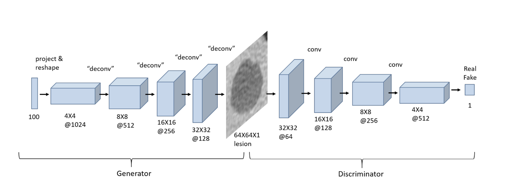
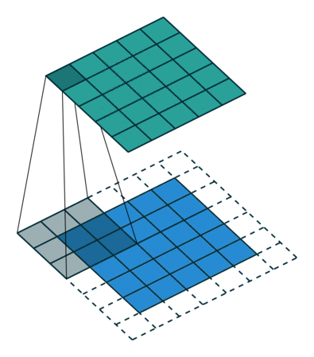
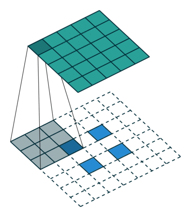
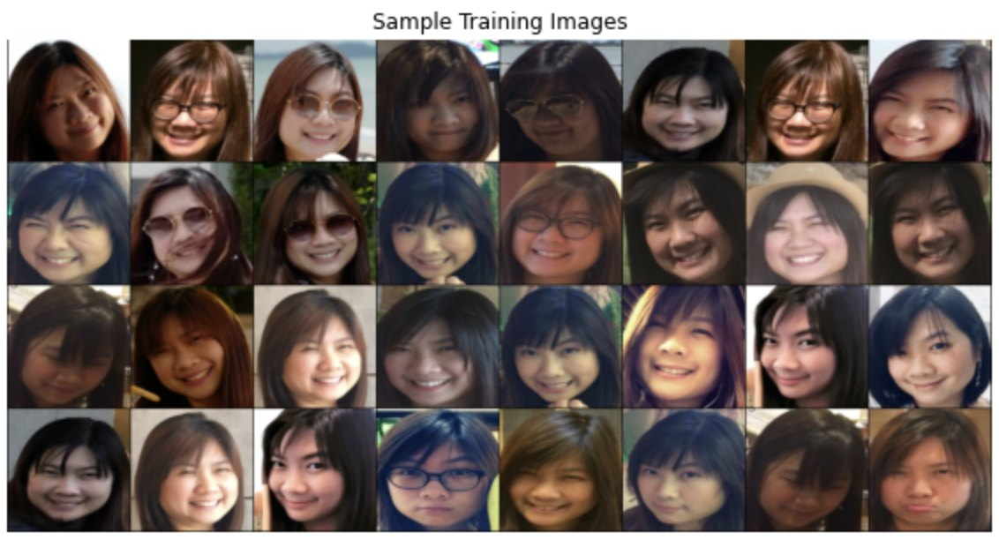
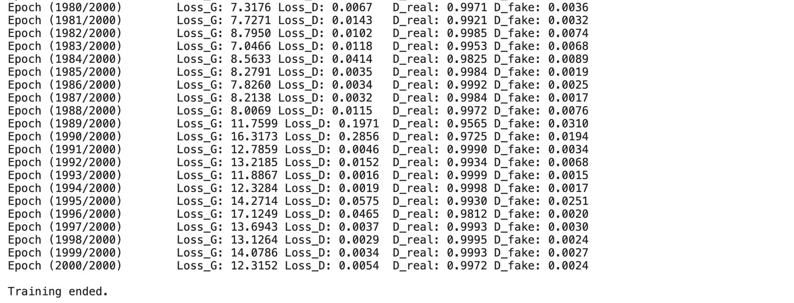
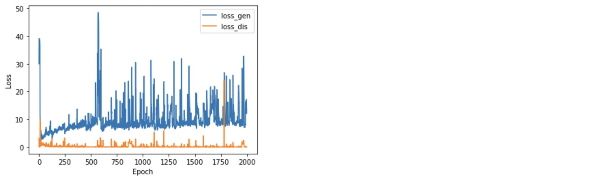
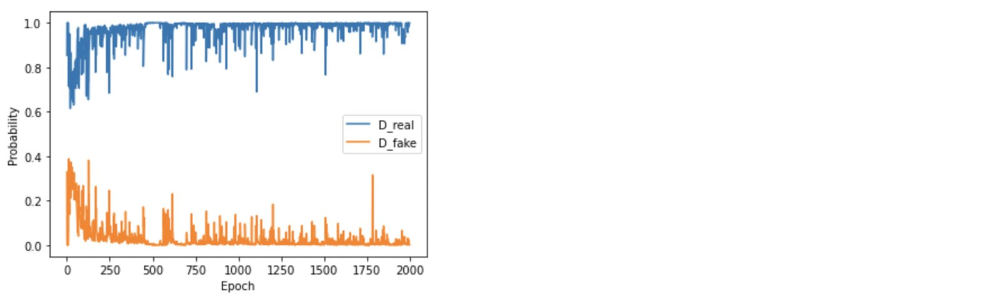
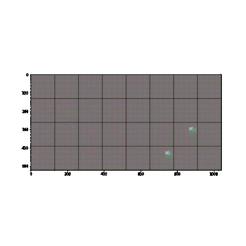
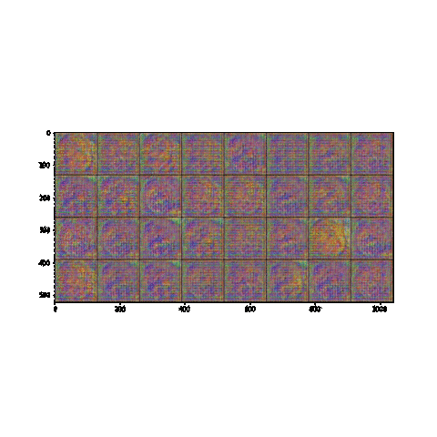
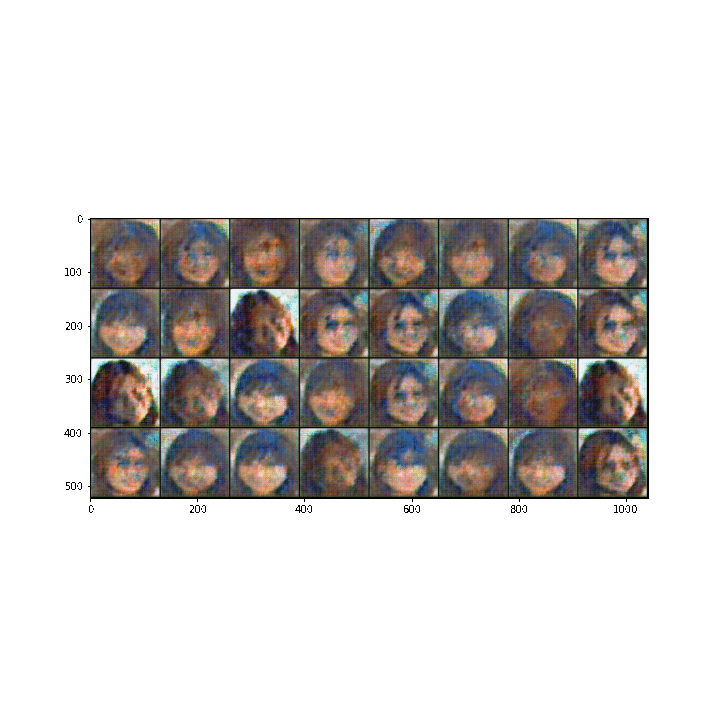

My GAN Wife
Sometime you may wonder how does your 2nd wife look like, but you do not have that chance, then you just learn about GAN, so, why don’t ask GAN for your 2nd wife .... ~~

What are GANs?
GANs, short for Generative Adversarial Networks, belong to a category of neural network models designed to generate new data that closely resembles the existing data within a given dataset.
To illustrate, consider a dataset comprising 10,000 images. The central question arises: can we create images so authentic that distinguishing between those generated (potentially from the dataset) and those authentic becomes nearly impossible?
In this scenario, the absence of explicit labels is notable. The objective is not to categorize the generated images but rather to produce visuals that mimic reality as closely as possible. This characteristic positions GAN modeling as an unsupervised learning task. In essence, the emphasis is on acquiring a collection of images (or input data) without the need for accompanying labels, target data, or outputs.
In 2014, Ian Goodfellow and his colleagues introduced Generative Adversarial Networks (GANs), a breakthrough concept in machine learning (refer to the original paper here). Yann LeCun, the AI research director at Facebook, has acclaimed GANs as "the most interesting idea in the last 10 years in ML."
GAN Structure

Image source: here
The architecture of a Generative Adversarial Network(GAN) comprises two essential components; a discriminator and a generator.
The discriminator is a conventional Convolutional Neural Network (CNN) that takes an image as input and generates a vector of probabilities indicating the likelihood of the input belonging to a particular class. On the other hand, the generator is an inverted CNN that accepts a vector of random numbers and outputs an image.
The term "adversarial" is derived from the adversarial relationship between two networks:
Generator: Aims to create synthetic images that closely resemble real ones, attempting to deceive the discriminator.
Discriminator: Tasked with differentiating between real and fake data by analyzing both genuine and generated inputs.
In an analogy, envision the "Generator" as a budding counterfeit artist striving to craft lifelike replicas of famous artworks for sale. The "Discriminator" acts as an art critic, assessing whether a piece of art is "real" or "fake." Initially, the "Generator" produces subpar replicas that the "Discriminator" easily discerns as fake. However, as time progresses, the "Generator" refines its techniques, creating art that increasingly confounds the "Discriminator." Eventually, the "Generator" becomes so adept that the "Discriminator" struggles to differentiate between real and fake pieces of art.
CNN structure
Convolution Layers :
Convolution layers play a crucial role in the discriminator of a Generative Adversarial Network (GAN), where their primary purpose is binary classification, distinguishing between real and fake inputs. The architecture of these convolution layers closely resembles what has been covered in the course for Convolutional Neural Networks (CNNs).
The fundamental function of convolution layers is to downsample input features. In simpler terms, their objective is to transition from larger features, such as images, to smaller features. This downsampling process involves applying convolutional operations to the input data, which helps in extracting relevant features and reducing the spatial dimensions of the data. This reduction is vital for the discriminator to effectively discern and classify whether the input is real or generated (fake).

Image source: here
Transposed Convolution Layers :
Indeed, transposed convolution layers, also known as deconvolution or fractionally strided convolution layers, serve a distinctive purpose compared to regular convolution layers. While convolution layers typically downsample input features, transposed convolution layers perform the opposite operation – they upsample the input.
In the context of a Generative Adversarial Network (GAN), transposed convolution layers are prominently employed in the generator. Their primary role is to generate an image from a given random vector or latent space. Unlike convolution layers that reduce spatial dimensions, transposed convolutions aim to increase the size of features, transitioning from smaller to larger images.
Essentially, transposed convolution layers contribute to the process of creating high-resolution synthetic images from lower-dimensional representations, facilitating the generator in its task of producing realistic-looking outputs from random input vectors.

Image source: here
Training GANs
Training a Generative Adversarial Network (GAN) involves an iterative process that unfolds in two main phases:
Train the Discriminator:
Generate fake images using the generator.
Present both real and fake images to the discriminator, guiding it to accurately classify them (a binary classification task).
The goal is for the discriminator to become adept at distinguishing between genuine and generated images.
Train the Generator:
Generate fake images with the generator, but deliberately label them as "real."
Pass these synthetic images through the discriminator, prompting it to assess their authenticity and provide a probability of being real.
Utilize a loss function to measure the disparity between the discriminator's judgment and the ideal output (where the generator successfully deceives the discriminator into classifying the fake images as "real").
Implement backpropagation based on the gradients of this loss value to adjust the parameters of the generator, enhancing its ability to produce increasingly convincing fake images.
Repeat:
Iterate through these two phases multiple times to refine both the discriminator and generator iteratively.
As the training progresses, the generator becomes more skilled at generating realistic images, while the discriminator improves its capacity to distinguish between real and fake images.
This cyclic process continues until the GAN achieves a balance where the generator produces high-quality synthetic data, and the discriminator struggles to differentiate between real and generated samples. Achieving this equilibrium signifies successful GAN training.
PyTorch Implementation
Alright!, it's time to set up a GAN implementation using PyTorch. Given the resource-intensive nature of GAN training, we'll leverage the power of a GPU for our computations. I'll provide the code here, tailored for execution on Kaggle. If you prefer running it on your local machine, make sure to adjust the folder paths for the dataset accordingly.
import numpy as np
import pandas as pd
from collections import OrderedDict
import torch
from torch import nn, optim
from torchvision import datasets, transforms, utils, models
import matplotlib.pyplot as plt
import matplotlib.animation as animation
from IPython.display import HTML
from PIL import Image
import os
for dirname, _, filenames in os.walk('/kaggle/input'):
for filename in filenames:
print(os.path.join(dirname, filename))# Load data
DATA_DIR = "/kaggle/input/my-gan-wife/img/train"
IMAGE_SIZE = (128, 128)
BATCH_SIZE = 32
data_transforms = transforms.Compose([
transforms.Resize(IMAGE_SIZE),
transforms.ToTensor(),
transforms.Normalize((0.5, 0.5, 0.5), (0.5, 0.5, 0.5))
])
dataset = datasets.ImageFolder(root=DATA_DIR, transform=data_transforms)
data_loader = torch.utils.data.DataLoader(dataset, batch_size=BATCH_SIZE, shuffle=True)
# Plot samples
sample_batch = next(iter(data_loader))
plt.figure(figsize=(10, 8)); plt.axis("off"); plt.title("Sample Training Images")
plt.imshow(np.transpose(utils.make_grid(sample_batch[0], padding=1, normalize=True), (1, 2, 0)));
print(f'Size of dataset: {len(data_loader) * BATCH_SIZE}')
Training images
Create a Generator class :
class Generator(nn.Module):
def __init__(self, LATENT_SIZE):
super(Generator, self).__init__()
self.main = nn.Sequential(
# input dim: [-1, LATENT_SIZE, 1, 1]
nn.ConvTranspose2d(LATENT_SIZE, 1024, kernel_size=4, stride=1, padding=0, bias=False),
nn.BatchNorm2d(1024),
nn.LeakyReLU(0.2, inplace=True),
# output dim: [-1, 1024, 4, 4]
nn.ConvTranspose2d(1024, 512, kernel_size=4, stride=2, padding=1, bias=False),
nn.BatchNorm2d(512),
nn.LeakyReLU(0.2, inplace=True),
# output dim: [-1, 512, 8, 8]
nn.ConvTranspose2d(512, 256, kernel_size=4, stride=2, padding=1, bias=False),
nn.BatchNorm2d(256),
nn.LeakyReLU(0.2, inplace=True),
# output dim: [-1, 256, 16, 16]
nn.ConvTranspose2d(256, 128, kernel_size=4, stride=2, padding=1, bias=False),
nn.BatchNorm2d(128),
nn.LeakyReLU(0.2, inplace=True),
# output dim: [-1, 128, 32, 32]
nn.ConvTranspose2d(128, 64, kernel_size=4, stride=2, padding=1, bias=False),
nn.BatchNorm2d(64),
nn.LeakyReLU(0.2, inplace=True),
# output dim: [-1, 64, 64, 64]
nn.ConvTranspose2d(64, 3, kernel_size=4, stride=2, padding=1, bias=False),
nn.BatchNorm2d(3),
# output dim: [-1, 3, 128, 128]
nn.Tanh()
# output dim: [-1, 3, 128, 128]
)
def forward(self, input):
output = self.main(input)
return outputCreate a Discriminator class :
class Discriminator(nn.Module):
def __init__(self):
super(Discriminator, self).__init__()
self.main = nn.Sequential(
# input dim: [-1, 3, 128, 128]
nn.Conv2d(3, 64, kernel_size=4, stride=2, padding=1, bias=False),
nn.BatchNorm2d(64),
nn.LeakyReLU(0.2, inplace=True),
# output dim: [-1, 64, 64, 64]
nn.Conv2d(64, 64, kernel_size=4, stride=2, padding=1, bias=False),
nn.BatchNorm2d(64),
nn.LeakyReLU(0.2, inplace=True),
# output dim: [-1, 64, 32, 32]
nn.Conv2d(64, 128, kernel_size=4, stride=2, padding=1, bias=False),
nn.BatchNorm2d(128),
nn.LeakyReLU(0.2, inplace=True),
# output dim: [-1, 128, 16, 16]
nn.Conv2d(128, 256, kernel_size=4, stride=2, padding=1, bias=False),
nn.BatchNorm2d(256),
nn.LeakyReLU(0.2, inplace=True),
# output dim: [-1, 256, 8, 8]
nn.Conv2d(256, 512, kernel_size=4, stride=2, padding=1, bias=False),
nn.BatchNorm2d(512),
nn.LeakyReLU(0.2, inplace=True),
# output dim: [-1, 512, 4, 4]
nn.Conv2d(512, 1, kernel_size=4, stride=1, padding=0),
# output dim: [-1, 1, 1, 1]
nn.Flatten(),
# output dim: [-1]
nn.Sigmoid()
# output dim: [-1]
)
def forward(self, input):
output = self.main(input)
return outputStart training the GAN
img_list = []
fixed_noise = torch.randn(BATCH_SIZE, LATENT_SIZE, 1, 1).to(device)
NUM_EPOCHS = 2000
print('Training started:\n')
D_real_epoch, D_fake_epoch, loss_dis_epoch, loss_gen_epoch = [], [], [], []
for epoch in range(NUM_EPOCHS):
D_real_iter, D_fake_iter, loss_dis_iter, loss_gen_iter = [], [], [], []
for real_batch, _ in data_loader:
# STEP 1: train discriminator
# ==================================
# Train with real data
discriminator.zero_grad()
real_batch = real_batch.to(device)
real_labels = torch.ones((real_batch.shape[0],), dtype=torch.float).to(device)
output = discriminator(real_batch).view(-1)
loss_real = criterion(output, real_labels)
# Iteration book-keeping
D_real_iter.append(output.mean().item())
# Train with fake data
noise = torch.randn(real_batch.shape[0], LATENT_SIZE, 1, 1).to(device)
fake_batch = generator(noise)
fake_labels = torch.zeros_like(real_labels)
output = discriminator(fake_batch.detach()).view(-1)
loss_fake = criterion(output, fake_labels)
# Update discriminator weights
loss_dis = loss_real + loss_fake
loss_dis.backward()
optimizerD.step()
# Iteration book-keeping
loss_dis_iter.append(loss_dis.mean().item())
D_fake_iter.append(output.mean().item())
# STEP 2: train generator
# ==================================
generator.zero_grad()
output = discriminator(fake_batch).view(-1)
loss_gen = criterion(output, real_labels)
loss_gen.backward()
# Book-keeping
loss_gen_iter.append(loss_gen.mean().item())
# Update generator weights and store loss
optimizerG.step()
print(f"Epoch ({epoch + 1}/{NUM_EPOCHS})\t",
f"Loss_G: {np.mean(loss_gen_iter):.4f}",
f"Loss_D: {np.mean(loss_dis_iter):.4f}\t",
f"D_real: {np.mean(D_real_iter):.4f}",
f"D_fake: {np.mean(D_fake_iter):.4f}")
# Epoch book-keeping
loss_gen_epoch.append(np.mean(loss_gen_iter))
loss_dis_epoch.append(np.mean(loss_dis_iter))
D_real_epoch.append(np.mean(D_real_iter))
D_fake_epoch.append(np.mean(D_fake_iter))
# Keeping track of the evolution of a fixed noise latent vector
with torch.no_grad():
fake_images = generator(fixed_noise).detach().cpu()
img_list.append(utils.make_grid(fake_images, normalize=True, nrows=10))
print("\nTraining ended.")
Generator Loss vs Discriminator Loss
plt.plot(np.array(loss_gen_epoch), label='loss_gen')
plt.plot(np.array(loss_dis_epoch), label='loss_dis')
plt.xlabel("Epoch")
plt.ylabel("Loss")
plt.legend();
Real vs Fake performance
plt.plot(np.array(D_real_epoch), label='D_real')
plt.plot(np.array(D_fake_epoch), label='D_fake')
plt.xlabel("Epoch")
plt.ylabel("Probability")
plt.legend();
The GAN Wife Result
%%capture
fig = plt.figure(figsize=(10, 10))
ims = [[plt.imshow(np.transpose(i,(1, 2, 0)), animated=True)] for i in img_list[::1]]
ani = animation.ArtistAnimation(fig, ims, interval=1000, repeat_delay=1000, blit=True)
ani.save('wife800_final.gif', writer='imagemagick', fps=2)
HTML(ani.to_jshtml())All iteration images

Last 1000 iteration images

The final image

Summary
We can see that the GAN is so powerful as it is able to generate pictures of my wife from a random noise and the pictures from some last iterations are quite good. For sure that the performance will be greatly improved if we do refine the model structure and train with more iterations. Feel free to try your second wife and tell me the result!!